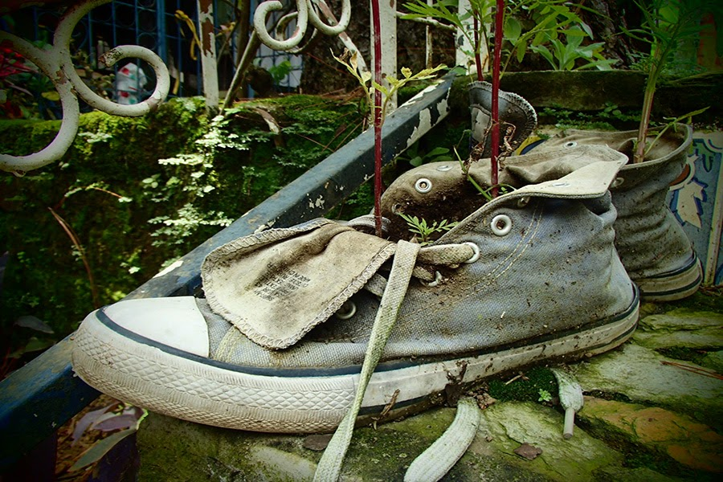

- 


Casa Mazeta welcomes you to Juayua and to this whole wonderful area known as La Ruta de las Flores (the flowered route) Here you will find the famous Feria Gastronomica (food festival) that is celebrated each and every weekend, the whole year round. Here you will find colourful murals, painted lamp-posts, cobblestone streets, horse & carriage rides. Here you will feel warm sunny days and fresh clean air and crisp peaceful nights. Here you will feel, at its best, the warmth and friendly welcome of the gentle Salvadoreños. Here you will enjoy an eclectic mix of local and international restaurants, bars and cafeterias. Enough to enjoy, but not toomuch. This is not Antigua ! Here you will taste some of the world´s best coffee. From here you can take short hikes to the crystalline waters of Los Chorros de la Calera, or longer hikes to Volcan Ilamatepec (Volcan Santa Ana) Or take any of the many other great hikes to waterfalls, lagunas, hot springs & geysers, mountain villages & towns, and to much, much more. You can tour coffee fincas, you can ride canopies (zip-lines) cuatrimotos (ATV´s) buggy´s and horses & ponies. Here, you cannot be bored. Here, at Casa Mazeta, you will find all the information and advice you need to make the most of your time. Here you will also find a haven of peace and relaxation. You will sleep on comfortable beds with real mattresses; you will wake to the sounds of birdsong and crickets and church bells. You may cook here, we can cook for you, or you could eat out at any one of the many excellent establishments nearby. We have board games and dartboards, we offer internet and TV with a wide range of DVDs.
Take bus to either of the the border crossings below;
La Hachadura (from Antigua, via Esquintla) then bus #259 to Sonsonate. From there take bus #249 heading north to Ahuachapan, getting off after around 45 minutes at Juayua. Follow map below to find Casa Mazeta Hostal or;
Las Chinamas (from Guat. City) bus #263 to Ahuachapan. From there take bus #249 heading south to Sonsonate, disembarking after around 45 mins at Juayua. Again, follow map and directions below to find us
The beaches of El Salvador: Direct bus #287leaves La Libertad daily at 06:00 am and at 1:30 pm, passing by the beaches of El Tunco, El Sunzal, El Zonte and La Mizata among others. This bus arrives at Sonsonate in around two and a half hours, from where you can follow the above directions.
San Salvador: Terminal de Occidente, San Salvador – starting from 5:00 am; bus #205 to Sonsonate and bus #202 to Ahuachapan, leaves frequently throughout the day. On arrival, follow above directions
Santa Ana: Bus #238 leaves at 6:40 am, 9:30 am, 12:20 mid-day, 4:20 pm, 5:30 pm and at 6:10 pm, arriving at Juayua in one hour. This bus passes directly in front of Casa Mazeta Hostal.
On arrival at Juayua : disembark and walk straight past Scotiabank – it´s on your right-hand side. Keep on straight a further 5 blocks – you´ll pass by parque central and El Cadejo, both on your left. At the street after El Cadejo (2da Avenida) turn left and walk 3 blocks. You´ll find us on the right-hand corner, – look for our name ´Hotel Casa Mazeta´ on a bright mosaic in front.
Arriving by plane: Write to us and we can arrange an airport pick-up, either direct to Casa Mazeta in around 2 hours ($80.00 for up to 4 persons) or to our sister hostel, El Roble in 30 minutes ($25.00, up to 4 persons) From El Roble our staff will give you all the information, maps, etc, on how to get to Juayua.
Pls note: regular buses leave both Sonsonate in the South, and Ahuachapan in the North, for Juayua. These buses leave at least every half-hour, all day long. There are also 5 buses between Santa Ana and Juayua, but at more

Double bed room, with private patio consisting open-air hot water shower and toilet, plus garden furniture & hammocks - $25.00
Garden Room, double bed room with private ensuite facilities - $25.00
Private double, with queen size bed, single bed and private ensuite facilities - $25.00 (may be reserved as triple at $30)
Private twin, with 2 single beds and shared bathroom adjacent - $20.00
6-bed dorm room - $9.00 pp
Large colonial home, tiled throughout and with exposed red-brick walls. Spacious entrance hall and lounge area with flat-screen cable TV. Well stocked, clean kitchen leading to beautiful, well main...
Free internet and WiFi
Free welcome drink on arrival
Hot water showers throughout